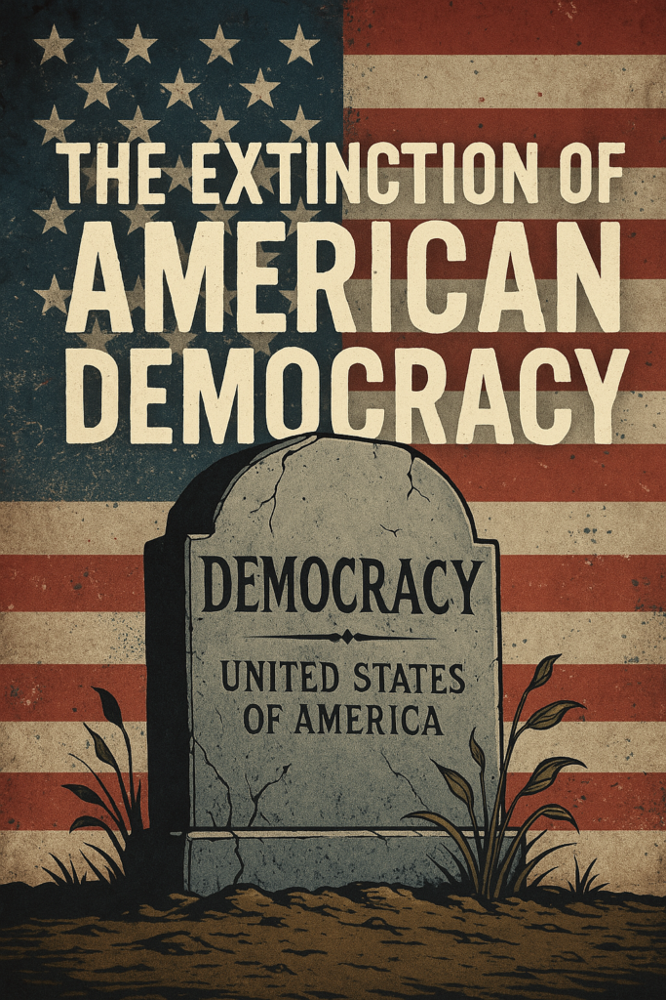

2025-03-30 20:13:03

The current political situation in the United States is causing deep concern among observers of democracy around the world. With Donald Trump back in the White House, the country's governance has increasingly shifted toward a style marked by authoritarian gestures, impulsive executive orders, and disdain for constitutional checks and balances.
In recent weeks, Trump's administration has intensified the use of executive orders to dismantle fundamental institutions — such as the Department of Education — and impose policies with little or no congressional oversight. This strategy not only undermines the role of the legislative branch but also trivializes the public debate necessary in a democratic society.
More troubling is Trump's recent statement suggesting that a third presidential term would be part of his plans. Such a possibility would require amending the U.S. Constitution, which clearly limits the presidency to two terms. However, the mere mention of this idea without strong institutional or civic resistance reveals a dangerous climate of apathy or fear.
This type of rhetoric — which might have been considered delusional or symbolic in the past — now seems increasingly plausible in a political context where the executive feels untouchable, and where the judiciary and legislature seem hesitant to draw clear boundaries.
The comparison with autocratic regimes, such as Vladimir Putin's Russia, is no longer exaggerated. Trump's governance model, supported by an unshakable partisan base and a media machine of disinformation, is dangerously aligned with anti-democratic practices — including attacks on the press, delegitimization of electoral institutions, and persecution of political opponents.
What is at stake is not just a political cycle, but the very essence of American democracy. If Trump succeeds in consolidating his power and neutralizing institutional resistance, the United States could cease to be a global reference for democratic values and become an example of how even a robust republic can be eroded from within.
For now, the world watches with concern — and for many Americans, the urgent question remains: who will have the courage to say "enough" before it's too late?
By : Francisco Gonçalves
Collaborative credits for DeepSeek's and ChatGPT (c)